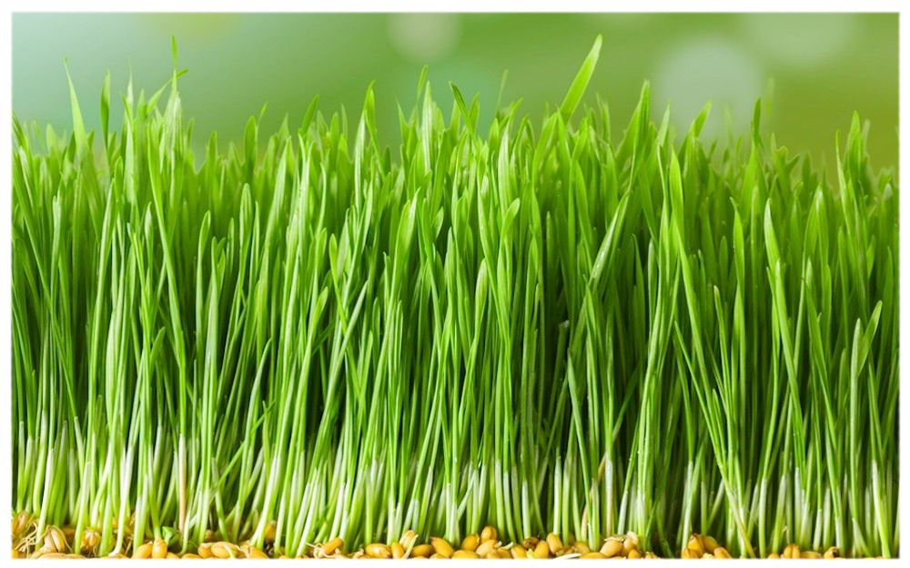

ПШЕНИЦА
Микрозелень пшеницы – продукт, обладающий колоссальным оздоровительным потенциалом и богатым витаминно-минеральным составом, благотворно влияющий на организм любого возраста. Те, кто занимается системами здорового питания, научились самостоятельно получать полезные проростки в домашних условиях, добавляют микрозелень пшеницы в различные блюда: салаты, супы, гарниры, коктейли.
Микрозелень пшеницы содержит: витамины: группы B, С, Е, D, К, Р, биотин, каротин, фолиевая кислота; макро- и микроэлементы: железо, йод, калий, кальций, кремний, кобальт, магний, марганец, медь, молибден, селен, сера, фосфор, фтор, хром, цинк; жирные и аминокислоты кислоты, антиоксиданты.
Польза для здоровья Микрозелень пшеницы: Повышает иммунитет, укрепляет защитные силы организма, тонизирует, дает энергию. Компенсирует недостаток витаминов и полезных веществ. Улучшает состояние кожи и волос, замедляет процессы старения. Ускоряет обмен веществ, нормализует работу желудочно-кишечного тракта, способствует очищению организма от шлаков и токсинов. Дает легкий мочегонный эффект – стимулирует почки и мочевой пузырь, устраняет застои жидкости в организме, снимает оттеки. Благотворно влияет на состоянии нервной системы, помогает справляться со стрессом, физическим и умственным перенапряжением. Рекомендуется к употреблению при дисбактериозе, хронических колитах, гастрите, простатите, сахарном диабете, ожирении. Способствует заживлению ран и воспалений. Проростки пшеницы полезны взрослым и детям, беременным и кормящим женщинам, пожилым людям. Микрозелень пшеницы противопоказана при обострениях заболеваний ЖКТ, мочевыводящих путей, индивидуальной непереносимости глютена.